Le Web
Comment est construite une page Web ? Contenu et présentation : HTML et CSS.
Ce que vous devez savoir faire
D'après le programme de SNT, à la fin de ce chapitre vous devez savoir :
- distinguer ce qui relève du contenu d'une page (le langage HTML) et de son style de présentation (le langage CSS) ;
- étudier et modifier une page HTML simple : reconnaître les balises, leur rôle et la structure d'une page (
head,body) ; - relier une feuille de style à une page et modifier la mise en forme avec quelques propriétés CSS ;
- reconnaître une URL et l'utiliser pour créer un lien ;
- connaître les grandes étapes de la naissance du Web (1991, CERN, Tim Berners-Lee).
Le TP : « Mon premier site Web »
Le travail se fait dans Capytale, qui affiche côte à côte les consignes, votre code et l'aperçu de votre page.
Ouvrir l'activité dans CapytaleCe qui sera évalué dans votre page :
- un texte bien structuré : titres, sous-titres et paragraphes ;
- une image correctement insérée, avec un texte alternatif et une taille adaptée ;
- des liens qui fonctionnent, vers un endroit de la page et vers un autre site ;
- une table des matières et un tableau complet et juste ;
- une vidéo intégrée à la page ;
- une feuille de style reliée à la page et une mise en forme soignée ;
- une page signée dans l'entête et un code propre : balises bien fermées, travail enregistré.
Points bonus : des points supplémentaires peuvent être gagnés pour des ajouts personnels (mise en page originale, couleurs, contenus en plus, balises ou propriétés CSS non vues en classe…), à condition de savoir expliquer ce que fait votre code.
Les mémentos à garder sous la main
Deux fiches pour retrouver les balises HTML et les propriétés CSS pendant le TP.
Mémento HTML5 Mémento CSSInspirés des mémentos d'Éric Bellot – licence CC BY-SA 4.0.
Les enquêtes du Web
Pour les enquêtes, vous aurez besoin du labo : il permet d'envoyer des requêtes au serveur de ce site et d'observer ses réponses.
Ouvrir le labo HTTP Enquête 2 : moteurs, cookies, licencesDes exemples réalisés par des élèves
Voici des pages réalisées par des élèves des années précédentes. Cliquez sur une image pour ouvrir la page. Les photos de personnes réelles ont été retirées de la version publiée.
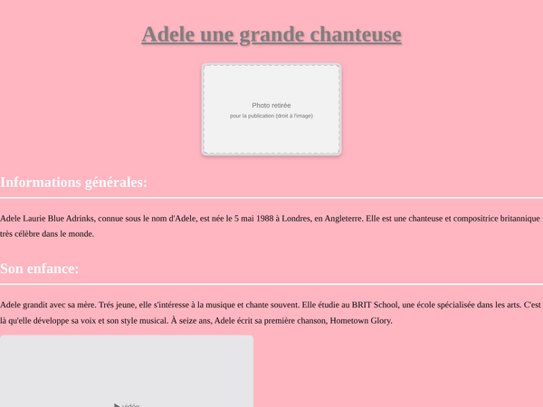
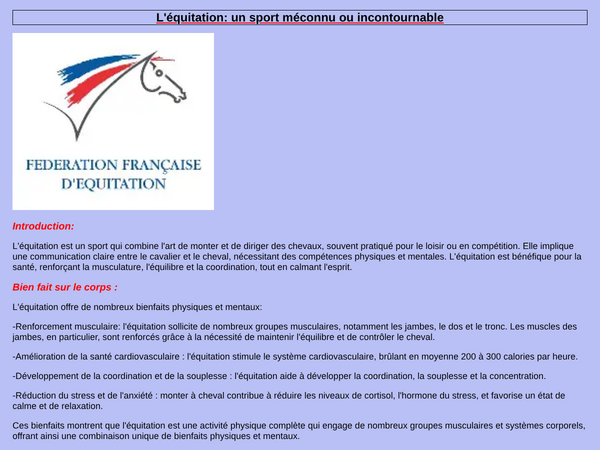
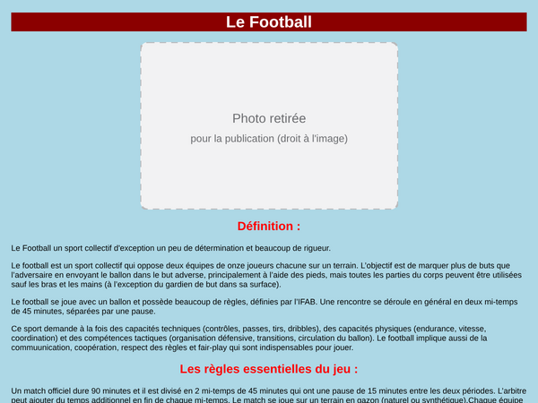
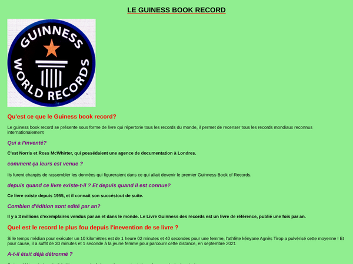
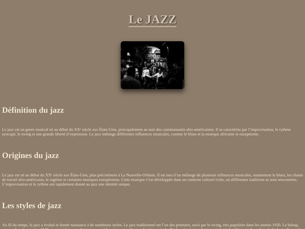
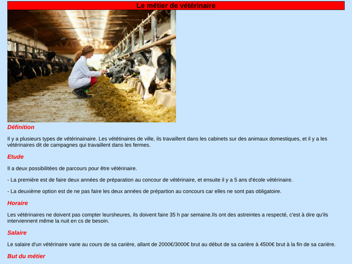
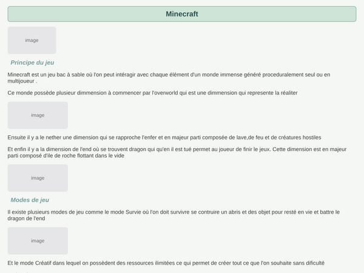
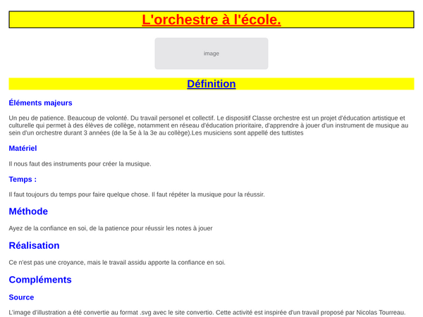
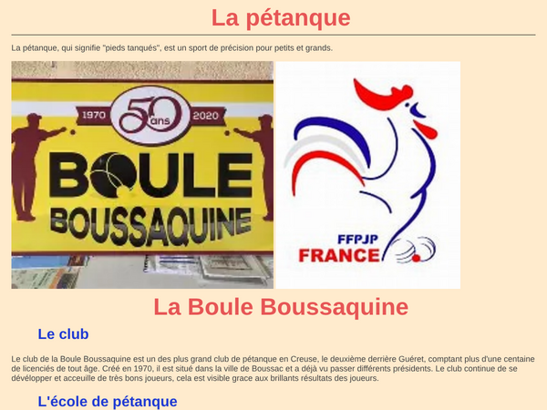
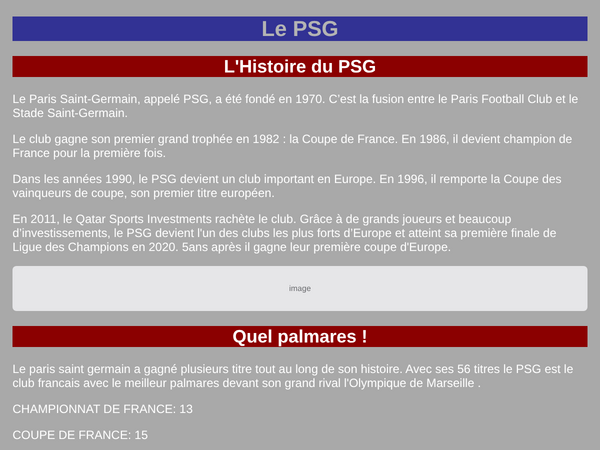
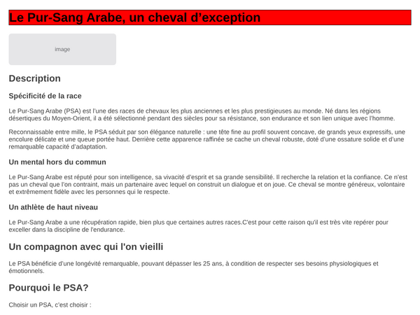
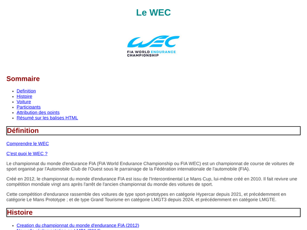
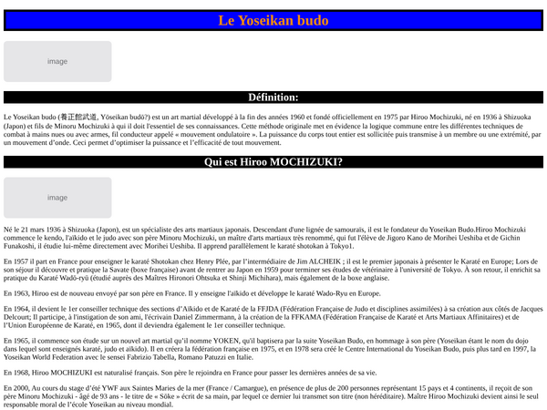
Crédits
Ce TP est adapté de l'activité « Mon premier site HTML / CSS » de Nicolas Tourreau (Cité scolaire de Lannemezan), partagée sous licence Creative Commons. Merci à lui ! Ses activités de SNT.